한 학년의 진도를 4단계로
교재 · 데일리테스트 · 클리닉
등원부터 월말보고서까지
각 학교의 특성에 맞는 철저한 내신대비
궁금하신 항목을 직접 선택해 확인하세요
궁금하신 항목을 선택하세요
한 학년의 진도를 4단계로 구성하여 본학년 내용의 완전한 이해와 1년의 선행학습이라는 두 가지 목표를 모두 완성합니다.
* 위의 예시는 중학교 2학년 기준이며 반별 성취도 상황에 따라 학습시기가 달라질 수 있습니다.
난이도의 점진적 향상을 위한 교재 선정 — 각 학습단계마다 엄선한 대표교재로 수업이 진행됩니다.
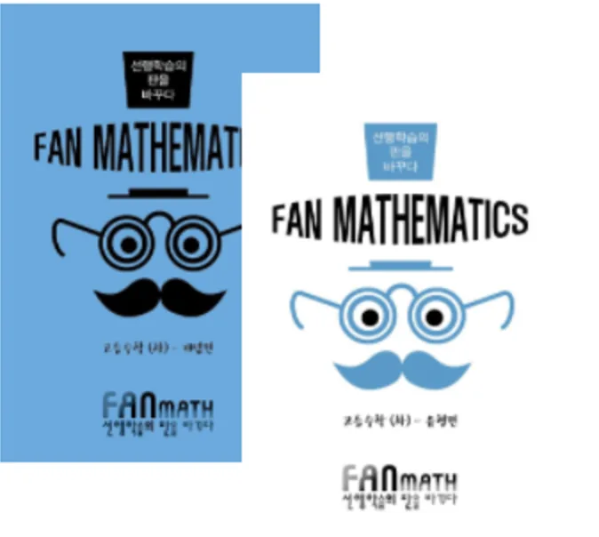
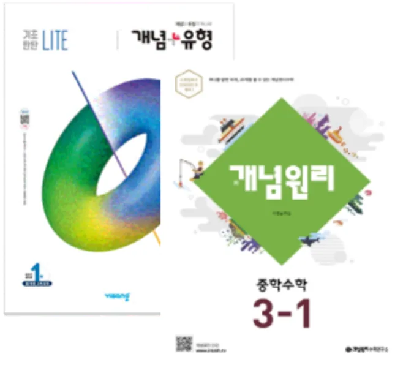
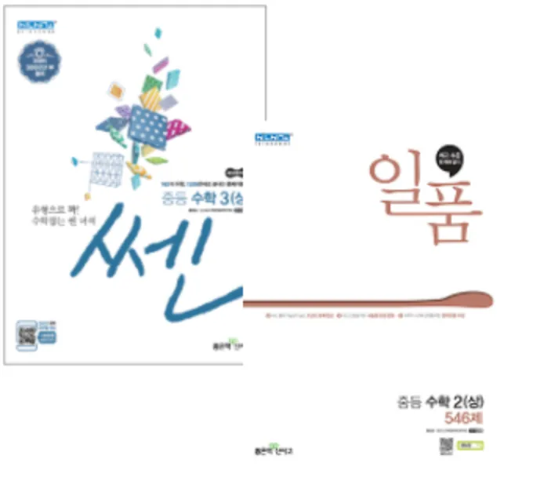
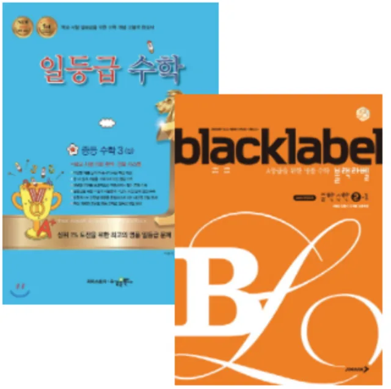
본인이 이해한 방식대로 개념을 정리할 수 있는 개방형구조의 문제로 전시간의 수업내용을 스스로 정리합니다.
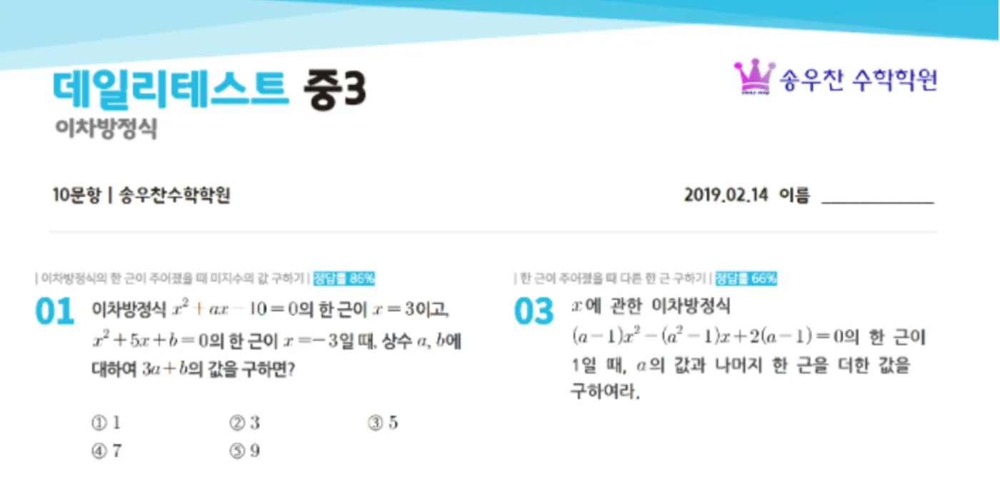
수업의 확실한 마무리 — 개개인의 오답유형을 다시 정리함으로써 확실한 약점체크가 이루어집니다.
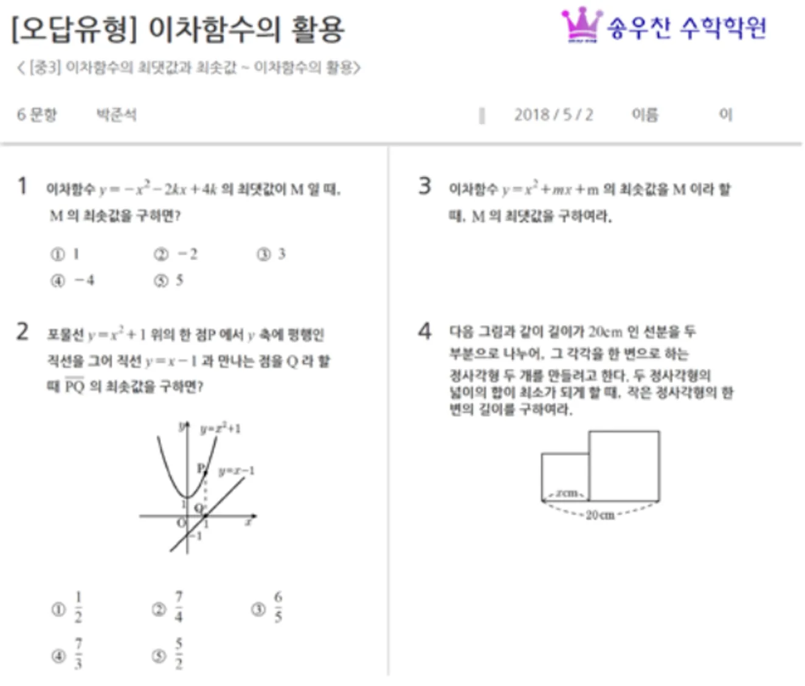
클리닉프로그램은 성취도가 각각 다른 학생들을 위한 수업의 마무리와 약점체크를 위한 시간입니다.
내신대비 START와 교과서를 중심으로 각 학교의 특성에 맞는 철저한 내신대비
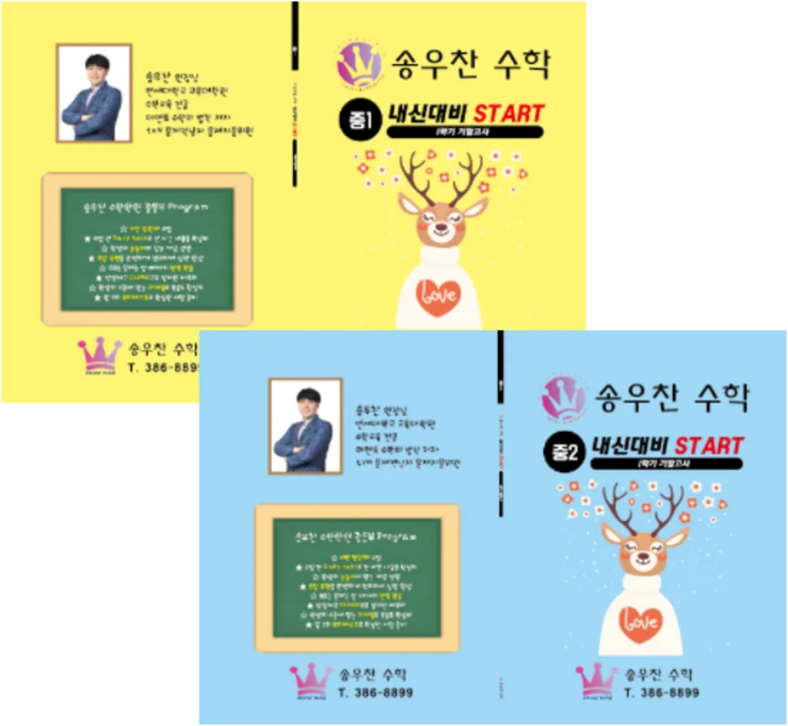
실전과 같은 마음으로 문제를 푸는 연습과 자신에게 맞는 시간 관리법을 스스로 익힙니다.
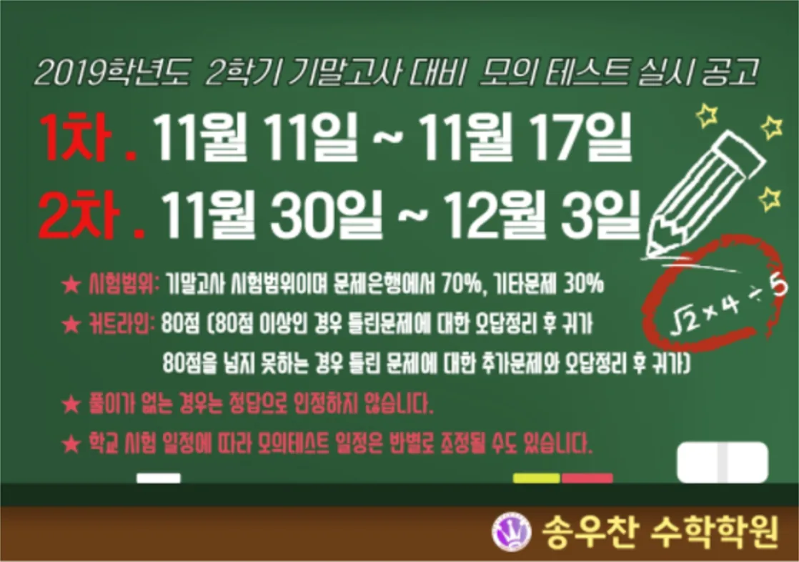
모의테스트 실시 공고 예시우리 아이의 학습 진행 상황을 확실하게 파악할 수 있도록 학부모님께 발송합니다.
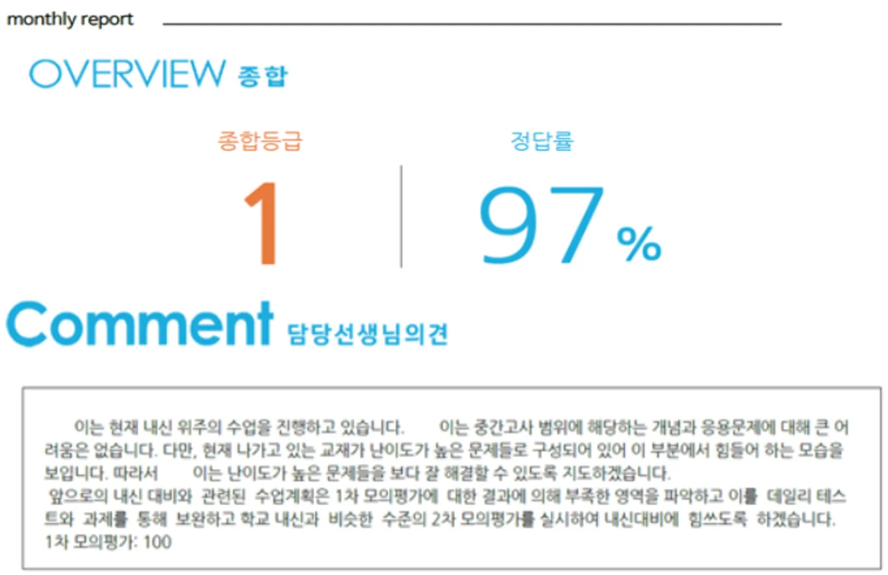
구체적인 결과를 통해 담당선생님과 더욱 정확한 상담을 나누실 수 있습니다. (문자 발송일은 사정에 따라 변동될 수 있습니다.)
오프라인의 부족함을 채우기 위한 송우찬 수학학원의 온라인 학습 공간
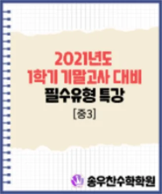
시험대비 필수 유형 특강시험기간에 꼭 정리해야 하는 필수 유형들의 해설 강의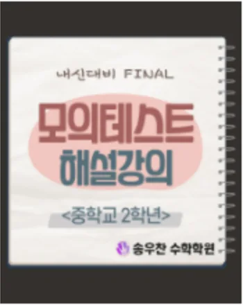
내신대비 START 모의테스트 해설 강의시험대비 교재인 내신대비 START에 수록된 모의테스트 해설